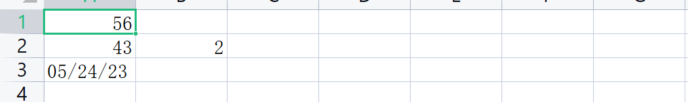

python处理excel教程系列
概述
因为工作中经常会需要用到脚本来批量处理excel数据，所以整理一下相关知识点，进行记录复习。
目前的学习计划是：
openpyxlpandas
一、openpyxl学习记录
1. 通用脚本函数
下面的函数可以直接进行调用，很是方便
网上找来的，实现的功能：
- 获取表格的总行数和总列数
- 获取某个单元格的值
- 获取某列的所有值
- 获取某行所有值
- 设置某个单元格的值
1 | |
2.安装
1 | |
3.创建文件
1 | |

4.列表插入行
1 | |
5.读取单元格
1 | |

6.读取多个单元格
假设数据：
1 | |
7.按行迭代
1 | |
8.按列迭代
1 | |
python处理excel教程系列
http://example.com/2023/05/24/python处理excel教程系列/